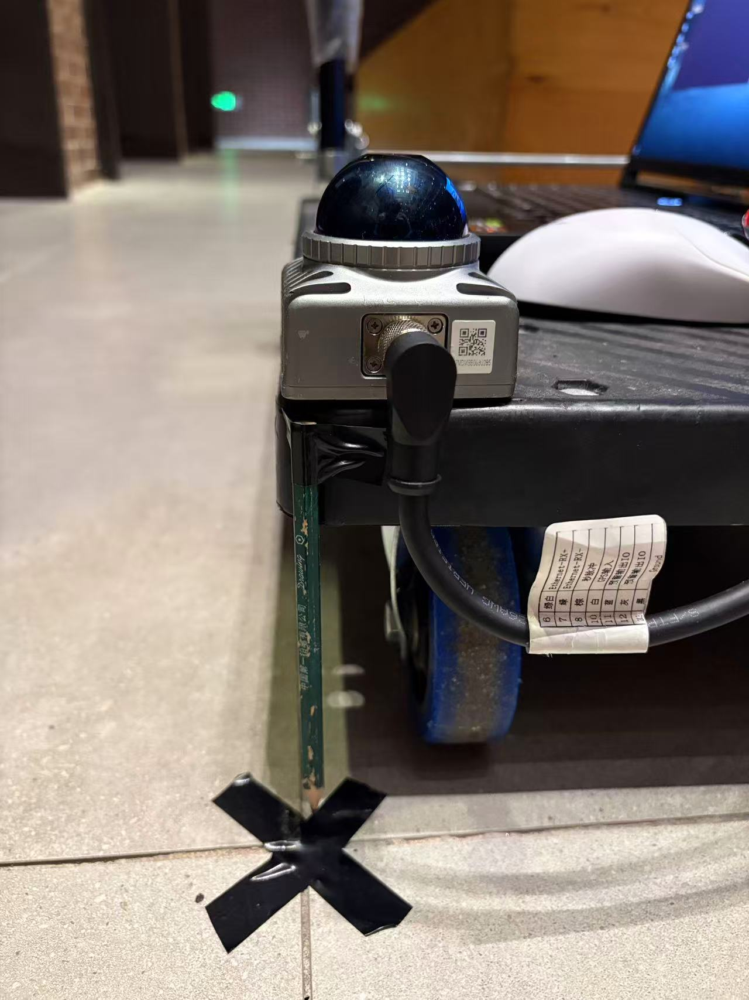
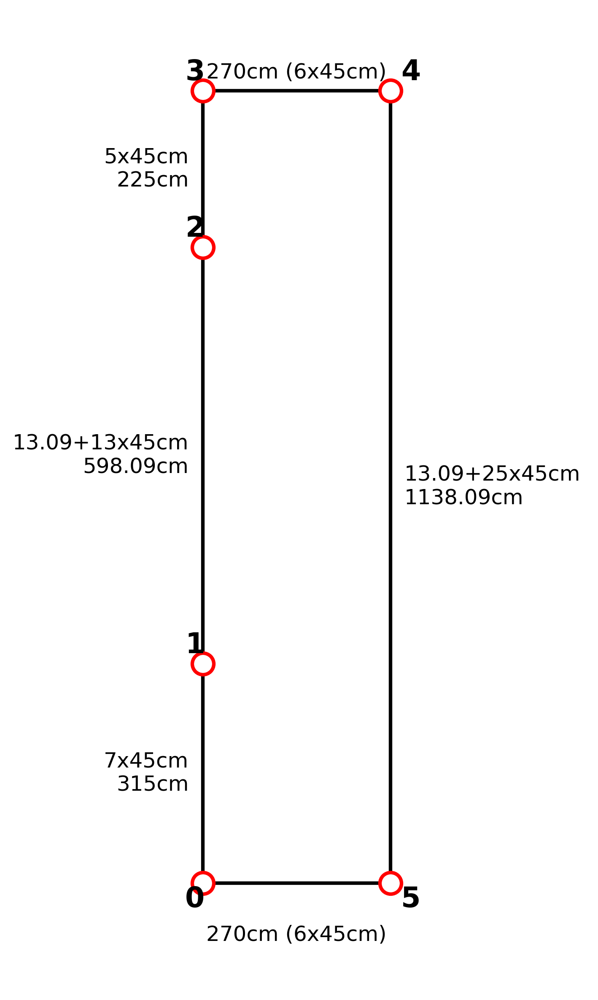

SLAM 内部一致性 Benchmark
8 条自录序列 · 2 类固态激光雷达 · 4 个 LiDAR-惯性里程计系统 —— 不依赖控制点坐标， 用轨迹自身必须满足的四项约束（静止、重访、闭合、段长）在毫米量级上区分优劣
结果
下表为各指标的序列中位数。绿色圆点标出该列最优；
「有效序列」不足 8 表示该指标对其部分序列不适用
（03_02、04_02 出发即在行走，无起点锚点，重访与闭合无定义）。
| 系统 | 静止散布 mm ↓ |
航向 ° ↓ |
重访 mm ↓ |
闭合 mm ↓ |
段长偏差 % ↓ |
段最差 % ↓ |
序列 |
|---|---|---|---|---|---|---|---|
| GLIMmap 系 · 全局优化后 | 3.1 | 0.21 | 18.6 | 11.3 | 0.05 | 3.21 | 8 |
| GLIModom 系 · 无全局跳变 | 3.3 | 0.27 | 32.2 | 35.6 | 0.06 | 3.12 | 6 |
| FAST-LIO2点到面 ICP · 无回环 | 8.0 | 0.24 | 54.8 | 69.0 | 0.28 | 5.61 | 8 |
| LIO-SAM因子图 · 有回环 | 7.2 | 0.28 | 33.7 | 27.0 | 0.00 | 4.53 | 8 |
| Point-LIO ※逐点 IEKF · 无回环 | 10.3 | 0.31 | 6.1 | 7.1 | 0.06 | 5.95 | 7 |
读法：四项指标互相独立——静止散布看短期噪声，重访/闭合看累积漂移， 段长偏差看局部尺度形变。一个系统可以「抖动小但漂移大」，也可能相反， 因此需要并排看而不是取平均。
关键发现
1. GLIM 的短期一致性进入毫米量级
静止散布 3.1 mm、航向 0.21°，两项均为四系统之首。 该量级已接近人站立时自然摆动（5~10 mm）所决定的下限，再小的差异不具备解释力。
2. 短期噪声与长期漂移是两种独立特性
GLIM 抖动最小（3.1 mm）但重访为 18.6 mm；Point-LIO 抖动最大 （10.3 mm）却几乎不漂（重访 6.1 mm、闭合 7.1 mm， 均为最优）。把两者混成一个平均分，会把不同失效模式抹平。
3. 闭合误差小不等于精度高
在 03_01 上，Point-LIO 的闭合误差为 35.6 mm（优于 GLIM 的 53.1 mm），
但静止散布 23.1 mm、单段最差 5.95%。这说明它首尾接得上，
中途却发生了形变——「回到原点」和「一路都准」是两件事。
4. 局部形状与长期漂移可分别最优
LIO-SAM 的段长偏差中位为 0.00%， 是局部尺度保持最好的；但重访 33.7 mm 明显落后。 其失效模式与 Point-LIO 正好相反。
5. 场地几何是主导因素
同一套配置下，2.70 m 窄走廊（03_01）的静止散布为 10.5 mm，
6.30 m 开阔房间（04_01）为 2.8 mm，相差约四倍。
报告精度时必须带上场地条件，否则数字不可比。
逐序列明细
静止散布 — 停车窗口内水平位置 RMS 偏差，越小越好
| 序列 | 传感器 | GLIM(odom) | GLIM(map) | FAST-LIO2 | LIO-SAM | Point-LIO |
|---|---|---|---|---|---|---|
01_1 |
MID-360s | — | 3.2 | 6.6 | 3.7 | 7.3 |
01_2 |
MID-360s | — | 7.6 | 11.5 | 8.1 | 10.3 |
02_1 |
MID-360s | 2.0 | 1.3 | 5.3 | 3.5 | 6.0 |
02_2 |
MID-360s | 2.1 | 1.8 | 6.4 | 3.1 | 5.3 |
03_01 |
C01 | 5.4 | 10.5 | 20.6 | 12.6 | 23.1 |
03_02 |
C01 | 7.2 | 5.1 | 12.8 | 8.3 | 发散 |
04_01 |
C01 | 3.4 | 2.8 | 7.6 | 7.3 | 16.8 |
04_02 |
C01 | 3.2 | 2.9 | 8.4 | 7.0 | 18.5 |
重访一致性 — 同一物理点两次访问的位置差，越小越好
| 序列 | 传感器 | GLIM(odom) | GLIM(map) | FAST-LIO2 | LIO-SAM | Point-LIO |
|---|---|---|---|---|---|---|
01_1 |
MID-360s | — | 26.9 | 52.9 | 23.9 | 24.5 |
01_2 |
MID-360s | — | 37.4 | 52.0 | 38.0 | 32.4 |
02_1 |
MID-360s | 7.6 | 10.2 | 56.8 | 1406.9 | 4.6 |
02_2 |
MID-360s | 2.3 | 5.5 | 57.4 | 23.5 | 4.4 |
03_01 |
C01 | 94.2 | 42.1 | 74.1 | 39.5 | 6.3 |
03_02 |
C01 | — | — | — | — | — |
04_01 |
C01 | 56.9 | 8.3 | 52.6 | 29.5 | 6.0 |
04_02 |
C01 | — | — | — | — | — |
闭合误差 — 统一时间区间内首尾各 1 s 的平均位置差，越小越好
| 序列 | 传感器 | GLIM(odom) | GLIM(map) | FAST-LIO2 | LIO-SAM | Point-LIO |
|---|---|---|---|---|---|---|
01_1 |
MID-360s | — | 14.8 | 72.6 | 11.9 | 7.6 |
01_2 |
MID-360s | — | 4.3 | 70.5 | 3.2 | 5.2 |
02_1 |
MID-360s | 15.4 | 13.7 | 64.9 | 1396.9 | 2.0 |
02_2 |
MID-360s | 7.2 | 8.9 | 67.4 | 22.1 | 6.5 |
03_01 |
C01 | 86.8 | 53.1 | 84.7 | 31.8 | 35.6 |
03_02 |
C01 | — | — | — | — | — |
04_01 |
C01 | 55.7 | 8.1 | 46.0 | 36.8 | 22.2 |
04_02 |
C01 | — | — | — | — | — |
段长偏差 — 相邻停车点间距相对图纸长度的偏差，越小越好
| 序列 | 传感器 | GLIM(odom) | GLIM(map) | FAST-LIO2 | LIO-SAM | Point-LIO |
|---|---|---|---|---|---|---|
01_1 |
MID-360s | — | −0.17 | 0.09 | −0.15 | 0.03 |
01_2 |
MID-360s | — | −0.34 | 0.00 | −0.29 | −0.17 |
02_1 |
MID-360s | 0.02 | 0.01 | 0.34 | −0.92 | 0.17 |
02_2 |
MID-360s | 0.09 | 0.10 | 0.22 | 0.37 | 0.06 |
03_01 |
C01 | −0.84 | −0.86 | −1.62 | −0.88 | −1.53 |
03_02 |
C01 | 0.42 | 0.42 | 0.56 | 0.34 | 发散 |
04_01 |
C01 | 0.57 | 0.15 | 0.71 | 0.27 | 0.38 |
04_02 |
C01 | −0.10 | 0.17 | 0.35 | 0.15 | 0.21 |
C01 与 MID-360s 对比
两组数据的场地构成不同：MID-360s 四条序列全在小场地（13~15 m）， C01 有两条在窄走廊（25~28 m）。直接比中位数会把「传感器」和「路线长度」 混在一起，因此分三级看。
1. 按传感器分组（各自全部有效序列的中位数）
| 系统 | 传感器 | 序列数 | 静止散布 | 航向 | 重访 | 闭合 | 段长偏差 |
|---|---|---|---|---|---|---|---|
| GLIM(map) | MID-360s | 4 | 2.5 mm | 0.14° | 18.6 mm | 11.3 mm | −0.08% |
| GLIM(map) | C01 | 4 | 4.0 mm | 0.27° | 25.2 mm | 30.6 mm | 0.16% |
| GLIM(odom) | MID-360s | 2 | 2.0 mm | 0.08° | 4.9 mm | 11.3 mm | 0.06% |
| GLIM(odom) | C01 | 4 | 4.4 mm | 0.32° | 75.5 mm | 71.3 mm | 0.16% |
| FAST-LIO2 | MID-360s | 4 | 6.5 mm | 0.15° | 54.8 mm | 69.0 mm | 0.15% |
| FAST-LIO2 | C01 | 4 | 10.6 mm | 0.31° | 63.4 mm | 65.3 mm | 0.45% |
| LIO-SAM | MID-360s | 4 | 3.6 mm | 0.14° | 31.0 mm | 17.0 mm | −0.22% |
| LIO-SAM | C01 | 4 | 7.8 mm | 0.35° | 34.5 mm | 34.3 mm | 0.21% |
| Point-LIO | MID-360s | 4 | 6.7 mm | 0.16° | 14.5 mm | 5.9 mm | 0.05% |
| Point-LIO | C01 | 3 | 18.5 mm | 0.45° | 6.1 mm | 28.9 mm | 0.21% |
2. 同场地同路线配对（只用小场地 6.30 × 1.80 m）
两颗雷达在同一块场地、同一条路线上的结果。C01 每路线只有 1 条序列， MID-360s 有 2 条，样本少，只能看趋势。
| 路线 | 系统 | MID-360s 静止散布 | C01 静止散布 | MID-360s 段长偏 | C01 段长偏 |
|---|---|---|---|---|---|
| 0-1-2-3-4-0 | GLIM(map) | 5.4 | 2.9 | −0.25 | 0.17 |
| 0-1-2-3-4-0 | GLIM(odom) | — | 3.2 | — | −0.10 |
| 0-1-2-3-4-0 | FAST-LIO2 | 9.0 | 8.4 | 0.04 | 0.35 |
| 0-1-2-3-4-0 | LIO-SAM | 5.9 | 7.0 | −0.22 | 0.15 |
| 0-1-2-3-4-0 | Point-LIO | 8.8 | 18.5 | −0.07 | 0.21 |
| 0-2-3-4-1-0 | GLIM(map) | 1.6 | 2.8 | 0.05 | 0.15 |
| 0-2-3-4-1-0 | GLIM(odom) | 2.0 | 3.4 | 0.06 | 0.57 |
| 0-2-3-4-1-0 | FAST-LIO2 | 5.8 | 7.6 | 0.28 | 0.71 |
| 0-2-3-4-1-0 | LIO-SAM | 3.3 | 7.3 | −0.28 | 0.27 |
| 0-2-3-4-1-0 | Point-LIO | 5.7 | 16.8 | 0.11 | 0.38 |
3. 同一序列内各系统的一致性
若各系统在同一条序列上给出几乎相同的航向散布，说明该量反映的是 录制时的实际晃动，而非算法或传感器差异。
| 序列 | 传感器 | 系统数 | 航向中位 | 航向极差 | 静止散布中位 | 静止散布极差 |
|---|---|---|---|---|---|---|
01_1 |
MID-360s | 4 | 0.18° | 0.01° | 5.1 mm | 4.1 mm |
01_2 |
MID-360s | 4 | 0.36° | 0.05° | 9.2 mm | 3.9 mm |
02_1 |
MID-360s | 5 | 0.06° | 0.05° | 3.5 mm | 4.7 mm |
02_2 |
MID-360s | 5 | 0.11° | 0.02° | 3.1 mm | 4.6 mm |
03_01 |
C01 | 5 | 0.33° | 0.16° | 12.6 mm | 17.7 mm |
03_02 |
C01 | 4 | 0.31° | 0.08° | 7.7 mm | 7.7 mm |
04_01 |
C01 | 5 | 0.43° | 0.22° | 7.3 mm | 14.0 mm |
04_02 |
C01 | 5 | 0.22° | 0.14° | 7.0 mm | 15.6 mm |
本数据集不足以判定哪颗雷达更准
传感器内部的离散度大于传感器之间的差异：静止散布在 MID-360s 上跨 1.3~11.5 mm、在 C01 上跨 2.8~23.1 mm，而两者的中位数只差 5.3 → 7.6 mm。 航向散布更明显 —— 同一序列内四个系统给出的值几乎相同（极差 0.01°~0.05°）， 说明它反映的是录制时人站得稳不稳，而不是算法或雷达。 同场地配对也没有一致方向：一条路线上 C01 略优，另一条上 MID-360s 全优。 要判定优劣需要同一设备、同一时刻、交替采集，并各跑 10 条以上序列。
评测思路
常规做法是用控制点真值算绝对轨迹误差（ATE）。在本数据集的室内近距离场景下， 这条路的分辨能力受两件事限制：
- 控制点坐标由卷尺与地砖尺寸推算，单块砖 0.2 mm 的偏差在 25 块后累积成 5 cm， 真值本身的不确定度约 ±1~2 cm；
- 每条轨迹只抽取 6~7 个停车时刻（约 1900 帧的 0.4%），单点抖动直接主导统计量。
于是当多个系统都进到 1 cm 以内时，基于真值的排名已经无法区分优劣—— 0.33 cm 与 0.35 cm 的差异落在真值不确定度之内。 本基准改用不依赖控制点坐标的约束：人站住时位姿应恒定、 同一地点二次访问应重合、闭环应首尾相接、相邻停车点间距应与图纸一致。 这些约束只用到「长度」和「路线拓扑」，对真值精度的敏感度低一个数量级。
两套口径解决不同问题，应结合使用
基于真值的 ATE 回答「轨迹与真实世界差多少」，适合报告整体精度与跨场景比较； 内部一致性回答「轨迹自身是否自洽、可复现」，适合区分系统质量、调参与回归验证。 后者不替代前者，只补其力不能及的部分。
四个指标
静止散布 std_xy
停车窗口内所有帧相对均值的位置偏差均方根。反映短期噪声与静止期漂移， 含人体自然摆动，因此 5 mm 已接近测量下限。
sqrt(mean[(x−x̄)² + (y−ȳ)²])
重访一致性 revisit
路线拓扑中同一停车点被访问两次时，两次估计位置之差。只依赖路线拓扑， 是最直接的累积漂移指标。
‖p̄ᵢ − p̄ⱼ‖, order[i] = order[j]
闭合误差 closure_1s
统一时间区间内首 1 s 与末 1 s 的平均位置之差。要求起点落在停车窗口内， 否则无定义（记 —）。取 1 s 平均而非单帧，以抑制抖动。
段长偏差 seg_bias
相邻停车点间距相对图纸长度的平均偏差，只比长度、不比绝对位置。 衡量经刚体对齐后仍残留的局部尺度形变。
停车窗口由 IMU 判定，与算法无关
停车时刻是数据的物理属性（人何时站住），因此用角速度模长、加速度模长与持续时间 从 IMU 中切出候选窗口，再按段长序列与图纸比对、用组合搜索求最优配对。 阈值不取固定值：8 条序列的静止质量不同，按由严到宽遍历， 取「最严格且能通过拓扑校验」的一组。
数据集
两套数据各自独立采集，不是同一时刻的 A/B 对比，只能比较量级。 序列的停车位置全部由 IMU 自动判定，与所用算法无关。
| 序列 | 传感器 | 场地 | 路线 | 路径长 | 时长 | 闭环 |
|---|---|---|---|---|---|---|
01_1 |
MID-360s | 小场地（6.30 × 1.80 m） | 0-1-2-3-4-0 | 15.15 m | 212 s | 是 |
01_2 |
MID-360s | 同上 | 0-1-2-3-4-0 | 15.15 m | 251 s | 是 |
02_1 |
MID-360s | 同上 | 0-2-3-4-1-0 | 14.65 m | 240 s | 是 |
02_2 |
MID-360s | 同上 | 0-2-3-4-1-0 | 14.65 m | 225 s | 是 |
03_01 |
C01 | 窄走廊（2.70 × 11.38 m） | 0-1-2-3-4-5-0 | 28.16 m | 194 s | 是 |
03_02 |
C01 | 同上 | 0-5-4-3-2-1-0（反向） | 25.46 m | 235 s | 否 |
04_01 |
C01 | 小场地 | 0-2-3-4-1-0 | 14.65 m | 159 s | 是 |
04_02 |
C01 | 小场地 | 0-1-2-3-4-0 | 13.35 m | 137 s | 否 |
覆盖情况
每条序列最多 5 条轨迹：GLIM 的 map 系与 odom 系两个输出，加上 FAST-LIO2、LIO-SAM、Point-LIO。
01_1、01_2 的 GLIM odom 录制不完整（3675 帧却跨 1071 s），
已剔除，故 GLIM (odom) 的有效序列为 6 条；Point-LIO 在 03_02 上发散，有效序列为 7 条。
采集方式
八个包用的是同一套流程：推着小车沿地面贴好的标记点走，到点停住 3~5 秒， 再走向下一个点。小车是碳纤维板加四个万向轮，上面放笔记本（跑驱动 + 录包）、 12 V 锂电池和雷达，比手持稳。


为什么每个点必须站住 3~5 秒：真值只有「停车点坐标」，没有逐帧真值。 站住之后，评测脚本才能靠「速度 < 0.08 m/s 且持续 > 2 s」把这段识别成静止段， 再与卷尺量出的坐标一一对应。本基准的停车窗口完全由 IMU 判定，正是为了不依赖任何算法的输出。
录包
bash scripts/26_record_bag.sh <包名>脚本会先自检话题是否在线（驱动没起来就不会录出一个空包）， 录完自动打印时长、体积、消息数与实测频率，频率偏离就标警告。 话题名对这一批设备是固定的：
| 话题 | 类型 | 期望频率 | 说明 |
|---|---|---|---|
/livox/lidar | sensor_msgs/msg/PointCloud2 | ~10 Hz | 每点自带 float64 纳秒时间戳 |
/livox/imu | sensor_msgs/msg/Imu | ~200 Hz | 与点云同源，供惯性预积分 |
两个容易踩的坑
点云统一录成 sensor_msgs/PointCloud2（不是 CustomMsg），
否则多数算法读不了；并行跑多个算法时必须给每一路不同的 ROS_DOMAIN_ID，
否则共用的 /livox/lidar 会串数据。录完还要核对轨迹时长是否覆盖整个包 ——
覆盖不足说明算法被算力挤掉了。
场地


真值由卷尺量相邻标记点距离后逐段累加得到，每段估计误差约 ±1 cm。 这个量级已经与算法误差同量级，也正是本基准改用内部一致性约束的原因（见 评测思路）。现场实拍： 地面 X 标记、 沿走廊的标记点。


复现
评测完全由脚本产出，页面上的数字不手写：
cd new_benchmark
source /opt/ros/humble/setup.bash
/usr/bin/python3 scripts/build.py # IMU 窗口 → 评测 → 表格 → 本站
分步执行：
/usr/bin/python3 scripts/build.py --windows # 仅重建停车窗口（需读 bag，约 1 分钟）
/usr/bin/python3 scripts/build.py --eval # 仅重跑评测（复用已有窗口，秒级）
/usr/bin/python3 scripts/make_site.py # 仅重新生成本页
新增一条序列：把轨迹放进 traj/{序列名}_{系统名}/traj.txt
（TUM 八列），在 config/manifest.json 登记，然后重跑上面三条命令。
适用范围与限制
- 静止散布的下限由人体晃动决定。站立时的自然摆动约 5~10 mm， 本指标无法分辨优于 5 mm 的差异。GLIM 的 3.1 mm 已达到该下限。
- 段长偏差仍需图纸尺寸。其参考值来自卷尺与地砖推算，精度约 ±1 cm/段。
- Point-LIO 在
03_02上未收敛。四次尝试（两种回放倍率、 两个独立 ROS 域）均发散至 404~433 cm，轨迹跨度达 9 km，已从统计中剔除， 其有效序列为 7 条。 - LIO-SAM 在
02_1上出现一次全局修正跳变。 t ≈ 172 s 出现 1.40 m 的单帧位姿跳变，随后末段位置超出场地范围， 导致闭合 1396.9 mm、重访 1406.9 mm，而其余序列为 6~38 mm。推断为回环约束误匹配。 - 两类传感器的 GLIM 配置不同。跨传感器的结果反映的是 「传感器 + 配置 + 场地」的组合差异，不能单独归因于传感器或参数； 同一传感器内部的横向比较不受影响。
- C01 的 GLIM 输出存在冷启动段。该构建采用 ROBUST 初始化， 前 3 s 位姿来自临时估计，之后仍需 30~40 s 预热才收敛， 轨迹起点比其它系统晚约 2 s，首个停车窗口样本偏少。
- 绝对精度仍需独立真值。若要报告毫米级 ATE， 须以全站仪或激光跟踪仪重新标定控制点，卷尺与地砖推算无法满足。